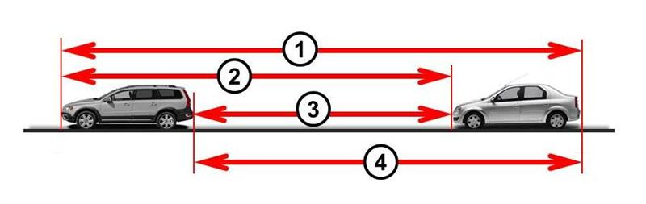
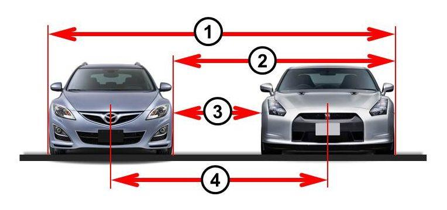
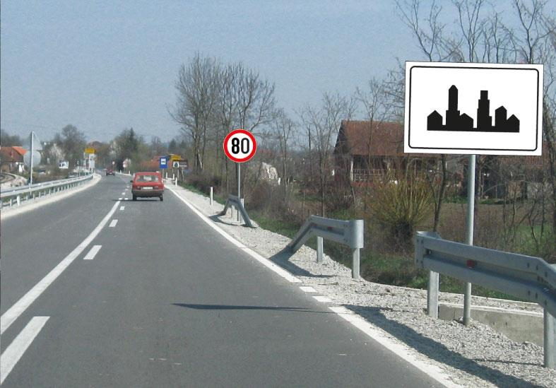
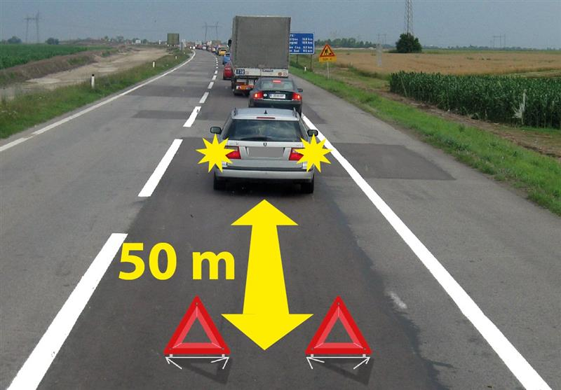

Kandidat za vozača za vreme praktične obuke kod sebe mora imati i staviti na uvid:
potvrdu o položenom teorijskom ispitu
ličnu kartu
dokaz o zdravstvenoj sposobnosti za vozača
knјižicu obuke kandidata za vozača
potvrdu o završenoj teorijskoj obuci
ugovor o uslovima pod kojima će se obaviti obuka
Перевод вопроса
Какие документы кандидат должен иметь при себе во время практического обучения?
Ответ и ловушка
Правильные ответы: 1, 2, 3.
По-русски: Три: подтверждение сданной теории, удостоверение личности и подтверждение медицинской пригодности.
Ловушка: Подтверждение завершения теоретического обучения не заменяет подтверждение сданного теоретического экзамена. Договор и книжка обучения здесь отвлекающие варианты.
Слова в вопросе: potvrda o položenom teorijskom ispitu; lična karta; dokaz o zdravstvenoj sposobnosti.
B · 8499
2 балл(а) · правильных ответов: 2
Vozač kome je izdata vozačka dozvola za upravlјanјe motornim vozilima kategorije B sme da upravlјa u saobraćaju na putu:
teškim triciklom čija snaga motora nije veća od 15 kW
teškim triciklom čija snaga motora je veća od 15 kW kada napuni 21 godinu
radnom mašinom čija najveća dozvolјena masa nije veća od 3.500 kg
traktorom
Перевод вопроса
Какие тяжёлые трициклы разрешает категория B?
Ответ и ловушка
Правильные ответы: 1, 2.
По-русски: До 15 кВт включительно; свыше 15 кВт — после достижения 21 года.
Ловушка: Вопрос имеет два правильных варианта. Категория B сама по себе не даёт право на трактор или рабочую машину из предложенных вариантов.
Слова в вопросе: nije veća od 15 kW; veća od 15 kW kada napuni 21 godinu.
B · 8502
2 балл(а) · правильных ответов: 1
Vozač kome je izdata vozačka dozvola za upravlјanјe motornim vozilima kategorije B može da upravlјa u saobraćaju na putu tim vozilima i kada im je pridodato priklјučno vozilo:
ako najveća dozvolјena masa skupa vozila nije veća od 3.500 kg
čija najveća dozvolјena masa nije veća od 750 kg
ako masa priklјučnog vozila nije veća od mase vučnog vozila
Перевод вопроса
Какой прицеп можно добавить к машине категории B в этом вопросе?
Ответ и ловушка
Правильный ответ: 2.
По-русски: Прицеп с максимальной разрешённой массой не более 750 кг.
Ловушка: Порог относится к najveća dozvoljena masa прицепа. Вариант про массу всего состава до 3500 кг в этом вопросе неправильный.
Слова в вопросе: priključno vozilo; najveća dozvoljena masa nije veća od 750 kg.
Vozač koji ima probnu vozačku dozvolu, ne sme upravlјati motornim vozilom:
u periodu od 22,00 do 05,00 časova
u periodu od 23,00 do 06,00 časova
u periodu od 23,00 do 06,00 časova, do navršenih 18 godina života
Перевод вопроса
Когда обладатель пробных прав не может водить?
Ответ и ловушка
Правильный ответ: 2.
По-русски: С 23:00 до 06:00.
Ловушка: Вариант с теми же часами, но только до 18 лет, неправильный. Ни 22:00, ни 00:00 из лекций не являются ответом банка.
Слова в вопросе: u periodu od 23,00 do 06,00 časova.
B · 10697
2 балл(а) · правильных ответов: 1
Vozač koji ima probnu vozačku dozvolu za upravlјanјe vozilom kategorije B, dok ne navrši 18 godina života, može prevoziti:
samo lice koje vrši nadzor u vozilu
najviše tri lica, uklјučujući i lice koje vrši nadzor u vozilu
onoliko lica koliko ima mesta predviđenih za sedenјe
Перевод вопроса
Сколько людей может перевозить водитель B с пробными правами до 18 лет?
Ответ и ловушка
Правильный ответ: 2.
По-русски: Не более трёх перевозимых лиц, включая сопровождающего; с самим водителем — до четырёх человек в автомобиле.
Ловушка: Глагол može prevoziti относится к перевозимым людям. Человек, который водит, не является собственным пассажиром. Фраза лектора «3 всего» расходится с ключом.
Слова в вопросе: najviše tri lica, uključujući i lice koje vrši nadzor.
B · 10696
2 балл(а) · правильных ответов: 1
Vozač koji ima probnu vozačku dozvolu ne sme upravlјati vozilom kategorije V:
čija snaga motora prelazi 80 kW, osim ako je pod nadzorom člana porodice, koji se nalazi u tom vozilu i koji ima važeću vozačku dozvolu za upravlјanјe vozilom kategorije V u trajanјu od najmanјe pet godina
čija snaga motora prelazi 80 kW, samo do navršenih 18 godina života
čija snaga motora prelazi 80 kW, samo u periodu od 23,00 do 06,00 časova
Перевод вопроса
Когда с пробными правами разрешён автомобиль мощнее 80 кВт?
Ответ и ловушка
Правильный ответ: 1.
По-русски: Под надзором находящегося в автомобиле члена семьи с действующими правами B не менее пяти лет.
Ловушка: Ограничение по мощности не заканчивается в 18 лет и не действует только ночью. Для этого исключения важно родство, а не просто опыт любого пассажира. В исходном вопросе написано kategorije V; сохраняем его текст, контекст относится к B.
Слова в вопросе: prelazi 80 kW; pod nadzorom člana porodice; najmanje pet godina.
B · 10693
2 балл(а) · правильных ответов: 1
Na putu koji nije autoput i motoput, vozaču koji ima probnu vozačku dozvolu upravlјanјe vozilom brzinom većom od 90% od brzine koja je dozvolјena na delu puta kojim se kreće:
nije dozvolјeno samo u periodu od 23,00 do 06,00 časova
nije dozvolјeno samo do navršenih 18 godina života
nije dozvolјeno
Перевод вопроса
Где для пробных прав применяется предел 90% разрешённой скорости?
Ответ и ловушка
Правильный ответ: 3.
По-русски: На дороге, которая не является autoput или motoput.
Ловушка: Это ограничение действует и днём, и после 18 лет. Для autoput и motoput отдельные вопросы 10691/10692 дают 110/90 км/ч.
Слова в вопросе: put koji nije autoput i motoput; 90%.
sopstvenom snagom po putu vuče ili gura vozilo, ručna kolica, dečje prevozno sredstvo ili kolica za nemoćna lica
se kreće po putu u dečjem prevoznom sredstvu ili u kolicima za nemoćna lica koje pokreće sopstvenom snagom ili snagom motora
upravlјa motokultivatorom po putu
Перевод вопроса
Кого в перечислении банк считает пешеходом?
Ответ и ловушка
Правильные ответы: 3, 4, 5.
По-русски: Идущего по дороге; толкающего или тянущего средство своими силами; человека в детском средстве или коляске для немощных лиц, движущейся его силами либо мотором.
Ловушка: Три ответа. Человек в моторизованной коляске для немощных лиц тоже входит в определение; водитель велосипеда и мотокультиватора здесь не пешеходы.
Слова в вопросе: pešak; sopstvenom snagom ili snagom motora.
B · 7936
1 балл(а) · правильных ответов: 3
Označiti neophodne uslove koji moraju biti istovremeno ispunјeni da bi se smatralo da je vozilo zaustavlјeno:
vozač je izašao iz vozila ali se od istog nije udalјio više od 5 m
prekid kretanјa vozila na putu traje do tri minuta
motor vozila je isklјučen
u vozilu nema nijednog lica
vozač nije napustio vozilo
prekid kretanјa vozila nije nastupio usled postupanјa po znaku ili pravilu, kojim se reguliše saobraćaj
Перевод вопроса
Какие три условия одновременно определяют zaustavljanje?
Ответ и ловушка
Правильные ответы: 2, 5, 6.
По-русски: Перерыв движения до трёх минут, водитель не покинул машину, причина не в соблюдении знака или правила движения.
Ловушка: Одной длительности недостаточно. Выйти даже на две минуты — другой случай (7938: parkiranje). Красный светофор исключён из этого определения остановки.
Слова в вопросе: istovremeno; do tri minuta; vozač nije napustio vozilo.
B · 7965
1 балл(а) · правильных ответов: 1
Nezgoda u kojoj je porušena dvorišna ograda pri izletanјu vozila sa puta:
nije saobraćajna nezgoda jer je materijalna šteta načinјena van puta
je saobraćajna nezgoda jer je načinјena materijalna šteta
nije saobraćajna nezgoda jer nema poginulih ili povređenih lica
nije saobraćajna nezgoda jer u nezgodi učestvovalo samo jedno vozilo
Перевод вопроса
Машина съехала с дороги и разрушила дворовую ограду. Это ДТП?
Ответ и ловушка
Правильный ответ: 2.
По-русски: Да: причинён материальный ущерб.
Ловушка: Не нужны две машины или пострадавший человек. То, что ограда находится вне дороги, не исключает ДТП, начавшееся выездом машины с дороги.
Слова в вопросе: materijalna šteta; izletanje vozila sa puta.
Odstojanјe između vozila prikazanih na slici je označeno brojem:

2
4
3
1
Перевод вопроса
Какой размер на схеме показывает odstojanje?
Ответ и ловушка
Правильный ответ: 3.
По-русски: Размер 3: от задней части передней машины до передней части следующей.
Ловушка: Не расстояние между передними бамперами и не длина одного автомобиля. Odstojanje — продольный промежуток.
Слова в вопросе: odstojanje.
B · 7971
1 балл(а) · правильных ответов: 1
Rastojanјe između vozila prikazanih na slici je označeno brojem:

1
2
3
4
Перевод вопроса
Какой размер на схеме показывает rastojanje?
Ответ и ловушка
Правильный ответ: 3.
По-русски: Размер 3: поперечный промежуток между ближайшими частями машин.
Ловушка: Не ширина машины и не расстояние между осями/центрами. Похожее слово odstojanje относится к продольной дистанции.
Слова в вопросе: rastojanje.
B · 9868
3 балл(а) · правильных ответов: 2
Vozač je dužan da brzinu kretanјa vozila prilagodi tako da:
ne ugrožava bezbednost saobraćaja
što pre bezbedno stigne na odredište
može ometati, ali ne i ugroziti druge učesnike u saobraćaju
vozilo može blagovremeno da zaustavi pred svakom preprekom koju pod datim okolnostima može da vidi ili ima razloga da predvidi
Перевод вопроса
Как нужно адаптировать скорость?
Ответ и ловушка
Правильные ответы: 1, 4.
По-русски: Не угрожать безопасности и успевать остановиться перед препятствием, которое видно или есть основания предвидеть.
Ловушка: Два ответа. «Успеть остановиться только перед уже видимым» сужает требование; быстрее прибыть в пункт назначения — отвлекающий вариант.
Слова в вопросе: može da vidi ili ima razloga da predvidi.
B · 9881
3 балл(а) · правильных ответов: 1
Vozač putničkog vozila prikazanog na slici dužan je da se kreće brzinom koja nije veća od:

80 km/h
50 km/h
60 km/h
Перевод вопроса
Какой максимальный предел для легковой машины после показанных знаков?
Ответ и ловушка
Правильный ответ: 1.
По-русски: 80 км/ч по знаку на рисунке.
Ловушка: Начало населённого пункта не означает безусловные 50 при другом установленном ограничении. 80 — предел, а не обязательная скорость: снег на рисунке всё ещё требует адаптации.
Saobraćajne trake, na autoputu, su na slici označene brojevima:
1 i 3
4 i 5
7 i 8
2 i 3
4, 5 i 6
Перевод вопроса
Какие номера на схеме автомагистрали обозначают saobraćajne trake?
Ответ и ловушка
Правильные ответы: 2, 4.
По-русски: Два варианта: 2 и 3; 4 и 5.
Ловушка: Kolovozna traka — проезжая часть одного направления; saobraćajna traka — отдельная полоса. Аварийная zaustavna traka не входит в выбранные полосы движения.
Слова в вопросе: saobraćajna traka; kolovozna traka; zaustavna traka.
B · 10606
2 балл(а) · правильных ответов: 1
Brzina kretanјa vozila u naselјu, na delu puta ili ulice u neposrednoj blizini škole („Zona škole“), je ograničena do:
30 km/h, u vremenu od 7,00 do 21,00 sat, osim ako saobraćajnim znakom vreme zabrane nije drugačije određeno
50 km/h, u vremenu od 7,00 do 21,00 sat, osim ako saobraćajnim znakom vreme zabrane nije drugačije određeno
20 km/h, radnim danima u vremenu od 7,00 do 21,00 sat
Перевод вопроса
Какой предел у школы в населённом пункте?
Ответ и ловушка
Правильный ответ: 1.
По-русски: 30 км/ч с 07:00 до 21:00, если знак не определяет время иначе.
Ловушка: В правильном варианте нет ограничения только рабочими днями. Не терять время действия и исключение по знаку.
Слова в вопросе: u naselju; od 7,00 do 21,00; osim ako.
B · 10607
2 балл(а) · правильных ответов: 1
Brzina kretanјa vozila van naselјa, na delu puta ili ulice u neposrednoj blizini škole („Zona škole“), je ograničena do:
50 km/h, u vremenu od 7,00 do 21,00 sat, osim ako saobraćajnim znakom vreme zabrane nije drugačije određeno
20 km/h, radnim danima u vremenu od 7,00 do 21,00 sat, osim ako saobraćajnim znakom vreme zabrane nije drugačije određeno
30 km/h, u vremenu od 7,00 do 21,00 sat
Перевод вопроса
Какой предел у школы вне населённого пункта?
Ответ и ловушка
Правильный ответ: 1.
По-русски: 50 км/ч с 07:00 до 21:00, если знак не определяет время иначе.
Ловушка: Внешне похожая школьная зона не делает предел 30 универсальным для любой дороги. Важно van naselja.
Слова в вопросе: van naselja; 50 km/h.
B · 9010
3 балл(а) · правильных ответов: 1
Izričita naredba data saobraćajnim znakom na slici važi:
na udalјenosti od 200 m od mesta na kome je postavlјen taj znak
od mesta na kome je postavlјen taj znak u dužini od 200 m
od mesta na kome je postavlјen taj znak
Перевод вопроса
Где начинает действовать предписание знака с табличкой 200 m без стрелок?
Ответ и ловушка
Правильный ответ: 1.
По-русски: Через 200 м от места установки знака.
Ловушка: Это расстояние до начала действия, а не длина участка. Сравни с 9011: добавление стрелок меняет смысл при том же числе.
Слова в вопросе: na udaljenosti od 200 m.
B · 9011
3 балл(а) · правильных ответов: 1
Izričita naredba data saobraćajnim znakom na slici važi:
na udalјenosti od 200 m od mesta na kome je postavlјen taj znak
od mesta na kome je postavlјen taj znak
od mesta na kome je postavlјen taj znak u dužini od 200 m
Перевод вопроса
Где действует знак с табличкой 200 m и стрелками вверх по краям?
Ответ и ловушка
Правильный ответ: 3.
По-русски: От места установки на протяжении 200 м.
Ловушка: Число то же, что в 9010, но стрелки задают протяжённость. Не начинать отсчёт действия через 200 м.
Ako je bar jedan učesnik ili lice koje je pretrpelo materijalnu štetu, u saobraćajnoj nezgodi u kojoj je nastala manјa materijalna šteta, zahtevao vršenјe uviđaja ostali učesnici:
su dužni da ostave podatke o sebi i vozilu učesniku koji je zahtevao vršenјe uviđaja i mogu se udalјiti sa mesta saobraćajne nezgode
su dužni da ostanu na mestu saobraćajne nezgode, do završetka uviđaja
nisu dužni da ostanu na mestu saobraćajne nezgode, do završetka uviđaja
Перевод вопроса
Один участник ДТП с небольшим ущербом потребовал uviđaj. Могут ли остальные уехать?
Ответ и ловушка
Правильный ответ: 2.
По-русски: Все участники должны остаться до завершения осмотра.
Ловушка: Недостаточно оставить данные и уехать; согласие всех на вызов не требуется (8540).
Слова в вопросе: bar jedan; do završetka uviđaja.
B · 8546
2 балл(а) · правильных ответов: 1
Ako učesnik u saobraćajnoj nezgodi u kojoj je nastala manјa materijalna šteta na drugom vozilu, zbog odsutnosti vozača drugog vozila, nije u mogućnosti da pruži lične podatke i podatke o osiguranјu vozila, dužan je da:
o toj nezgodi obavesti policiju i saopšti svoje lične podatke i podatke o oštećenom vozilu
o toj nezgodi obavesti osiguravajuće društvo kod kojeg je osigurano nјegovo vozilo i saopšti svoje lične podatke i podatke o oštećenom vozilu
na oštećenom vozilu u pisanoj formi ostavi svoje lične podatke
Перевод вопроса
Что делать, если водитель повреждённой машины отсутствует и передать данные ему нельзя?
Ответ и ловушка
Правильный ответ: 1.
По-русски: Сообщить полиции свои данные и сведения о повреждённой машине.
Ловушка: Записка на автомобиле и уведомление только страховой компании — неправильные варианты этого вопроса.
Слова в вопросе: zbog odsutnosti vozača; obavesti policiju.
B · 8535
2 балл(а) · правильных ответов: 1
Od nastanka saobraćajne nezgode do završetka uviđaja, učesnicima saobraćajne nezgode uzimanјe alkoholnih pića, odnosno psihoaktivnih supstanci:
nije dozvolјeno
nije dozvolјeno, samo kada mu takvu zabranu saopšti lice koje vrši uviđaj
je dozvolјeno, nakon sprovedenog ispitivanјa na prisustvo ovih materija
Перевод вопроса
Можно ли употребить алкоголь после ДТП до окончания uviđaj, если уже проверили?
Ответ и ловушка
Правильный ответ: 1.
По-русски: Нет, с момента ДТП до окончания осмотра это запрещено.
Ловушка: Проведённый алкотест не снимает запрет. Отдельное устное предупреждение сотрудника тоже не требуется.
Слова в вопросе: do završetka uviđaja; nije dozvoljeno.
B · 8539
2 балл(а) · правильных ответов: 2
Vozač koji je učestvovao u saobraćajnoj nezgodi u kojoj je neko lice zadobilo telesne povrede, odnosno poginulo, ili je nastala velika materijalna šteta:
može se udalјiti sa mesta nezgode radi prevoženјa povređenog do najbliže zdravstvene ustanove
može se udalјiti sa mesta nezgode ako nema znanјa, sposobnosti i mogućnosti da pruži pomoć licima povređenim u saobraćajnoj nezgodi
može se udalјiti sa mesta nezgode ako mu je neophodna hitna medicinska pomoć
dužan je da ostane na mestu nezgode do dolaska policije, bez obzira na svoje i povrede drugih učesnika nezgode
Перевод вопроса
Когда участник ДТП с пострадавшими/большим ущербом может отлучиться?
Ответ и ловушка
Правильные ответы: 1, 3.
По-русски: Чтобы отвезти пострадавшего в ближайшее медучреждение или если ему самому нужна срочная медицинская помощь.
Ловушка: Два правильных ответа. Неумение оказывать помощь само по себе не даёт права просто уехать.
Слова в вопросе: najbliža zdravstvena ustanova; neophodna hitna medicinska pomoć.
B · 10526
2 балл(а) · правильных ответов: 1
U situaciji prikazanoj na slici kolona zaustavlјenih motornih vozila na putu van naselјa:

je označena na propisan način
nije označena na propisan način
Перевод вопроса
Правильно ли обозначена остановившаяся колонна вне населённого пункта на рисунке?
Ответ и ловушка
Правильный ответ: 1.
По-русски: Да: показаны два треугольника позади колонны и расстояние 50 м.
Ловушка: Один треугольник при той же дистанции в парном вопросе 10525 недостаточен. Не переносить лекторские 100 м автомагистрали на каждую загородную ситуацию.
Слова в вопросе: kolona zaustavljenih motornih vozila; van naselja.
Lice niže od 135 cm koje se prevozi u vozilu, osim u vozilima za javni prevoz putnika:
mora se prevoziti vezano u odgovarajućem homologovanom bezbednosnom sedištu, koje je pričvršćeno za vozilo u skladu sa deklaracijom proizvođača vozila, odnosno proizvođača bezbednosnog sedišta
može se prevoziti vezano sigurnosnim pojasom vozila
može se prevoziti vezano sigurnosnim pojasom vozila uz upotrebu homologovanog bezbednosnog podmetača, ukoliko visina lica omogućava bezbedno vezivanјe i ukoliko na mestu gde lice sedi postoji ugrađen naslon za glavu
Перевод вопроса
Как перевозить человека ниже 135 см в автомобиле, кроме общественного пассажирского транспорта?
Ответ и ловушка
Правильный ответ: 1.
По-русски: Пристёгнутым в подходящем одобренном удерживающем кресле, закреплённом по указаниям изготовителя машины/кресла.
Ловушка: Lice — лицо, не только ребёнок. В этом вопросе не дано возрастное условие исключения для бустера; нельзя выбирать бустер по одному росту.
Слова в вопросе: lice niže od 135 cm; homologovano bezbednosno sedište.
B · 10672
2 балл(а) · правильных ответов: 1
Lice niže od 135 cm koje je starije od četiri godine, koje se prevozi u vozilu, osim u vozilima za javni prevoz putnika:
mora se prevoziti vezano u odgovarajućem homologovanom bezbednosnom sedištu, koje je pričvršćeno za vozilo u skladu sa deklaracijom proizvođača vozila, odnosno proizvođača bezbednosnog sedišta
može se prevoziti vezano sigurnosnim pojasom vozila
može se prevoziti vezano sigurnosnim pojasom vozila uz upotrebu homologovanog bezbednosnog podmetača, ukoliko visina lica omogućava bezbedno vezivanјe i ukoliko na mestu gde lice sedi postoji ugrađen naslon za glavu
Перевод вопроса
Какое исключение для человека ниже 135 см и старше четырёх лет?
Ответ и ловушка
Правильный ответ: 3.
По-русски: Одобренный бустер и ремень автомобиля, если рост позволяет безопасно пристегнуться и на месте есть встроенный подголовник.
Ловушка: Все условия соединены «и». Бустер не равен обычному ремню без дополнительного средства. «Выше 135» из лекции противоположно условию вопроса.
Слова в вопросе: niže od 135 cm; starije od četiri godine; naslon za glavu.
B · 10448
2 балл(а) · правильных ответов: 2
U motornom vozilu na prednјem sedištu može da se prevozi dete:
mlađe od 12 godina, ukoliko se prevozi u bezbednosnom sedištu koje je okrenuto u smeru kretanјa vozila
starije od 8 godina, ukoliko se prevozi u bezbednosnom sedištu koje je okrenuto u smeru kretanјa vozila, ako je isklјučen bezbednosni vazdušni jastuk
starije od 12 godina
do 3 godine, ukoliko se prevozi u bezbednosnom sedištu - korpi, koja je okrenuta suprotno smeru kretanјa vozila, kada vozilo nema ili je isklјučen bezbednosni vazdušni jastuk
Перевод вопроса
Какие дети из вариантов могут ехать на переднем сиденье?
Ответ и ловушка
Правильные ответы: 3, 4.
По-русски: Старше 12 лет; либо до трёх лет в кресле-корзине против хода при отсутствующей или выключенной подушке.
Ловушка: Два ответа. Отключённая подушка не делает кресло по ходу разрешённым для любого ребёнка до 12 лет.
Слова в вопросе: starije od 12 godina; do 3 godine; suprotno smeru; isključen jastuk.
Kada se vozač u određenom roku ne podvrgne kontrolnom zdravstvenom pregledu na koji je upućen, nadležni organ će:
vozaču privremeno zabraniti upravlјanјe vozilom u saobraćaju na putu dok se ne podvrgne kontrolnom zdravstvenom pregledu
vozaču oduzeti vozačku dozvolu
protiv vozača podneti zahtev za pokretanјe prekršajnog postupka
Перевод вопроса
Что сделает орган, если водитель не прошёл назначенный контрольный медосмотр в срок?
Ответ и ловушка
Правильный ответ: 2.
По-русски: Изымет водительское удостоверение.
Ловушка: Временный запрет до осмотра — правдоподобный, но неправильный вариант. Не путать контроль здоровья с техосмотром автомобиля.
Слова в вопросе: kontrolni zdravstveni pregled; oduzeti vozačku dozvolu.
B · 10665
3 балл(а) · правильных ответов: 1
Pod dejstvom alkohola je vozač kod kojeg je sadržaj alkohola u krvi (utvrđen analizom odgovarajućeg uzorka krvi ili sredstvima ili aparatima za merenјe alkoholisanosti) veći od:
0,30 mg/ml
0,20 mg/ml
0,50 mg/ml
Перевод вопроса
Какая концентрация крови означает воздействие алкоголя в этом общем вопросе?
Ответ и ловушка
Правильный ответ: 2.
По-русски: Более 0,20 мг/мл.
Ловушка: Важно veći od: порог строго превышен. Для специальных групп и пробных прав действует ноль — отдельные вопросы. 0,20 мг/мл = 0,20 г/л; здесь сохраняем единицу банка и не смешиваем её без пояснения с лекторскими г/кг.
Слова в вопросе: veći od 0,20 mg/ml.
B · 8059
1 балл(а) · правильных ответов: 1
Lek koji sadrži psihoaktivnu supstancu i koji se ne sme upotreblјavati pre i za vreme vožnјe, na pakovanјu ima oznaku prikazanu na slici broj:
4
2
1
3
Перевод вопроса
Какой символ на упаковке означает препарат, запрещённый до и во время вождения?
Ответ и ловушка
Правильный ответ: 3.
По-русски: Номер 1 — сплошной красный треугольник.
Ловушка: Красный контурный треугольник с восклицательным знаком выглядит похоже, но здесь выбран именно заполненный треугольник.
Слова в вопросе: lek ... ne sme upotrebljavati pre i za vreme vožnje.
Motorno vozilo čija je najveća konstruktivna brzina 40 km/h i koje ima tri točka i motor sa unutrašnјim sagorevanјem sa pogonom koji nije na benzin, čija je radna zapremina 55 cm3, a najveća efektivna snaga 4 kW, je:
moped
motocikl
bicikl
laki tricikl
Перевод вопроса
Три колеса, 40 км/ч, небензиновый ДВС 55 см³ и 4 кВт. Что это?
Ответ и ловушка
Правильный ответ: 4.
По-русски: Laki tricikl — лёгкий трицикл.
Ловушка: Для небензинового ДВС решает эффективная мощность до 4 кВт, а не бензиновый предел 50 см³. 55 см³ — отвлекающая цифра.
Слова в вопросе: pogon koji nije na benzin; 4 kW.
B · 8011
1 балл(а) · правильных ответов: 2
Motorno vozilo, koje ima motor sa unutrašnјim sagorevanјem sa pogonom na benzin, je teški tricikl ako istovremeno ispunјava najmanјe sledeće uslove:
nјegova najveća efektivna snaga prelazi 4 kW
nјegova najveća konstruktivna brzina, bez obzira na način prenosa, prelazi 45 km/h
ima tri točka, simetrično raspoređenih u odnosu na srednјu podužnu ravan vozila
nјegova najveća efektivna snaga ne prelazi 4 kW
radna zapremina motora ne prelazi 50 cm3
Перевод вопроса
Какие минимум два перечисленных условия вместе задают бензиновый тяжёлый трицикл?
Ответ и ловушка
Правильные ответы: 2, 3.
По-русски: Конструктивная скорость свыше 45 км/ч и три колеса симметрично относительно продольной плоскости.
Ловушка: В данном наборе правильных вариантов нет требования свыше 4 кВт. Лекторские «свыше 50» не совпадают с вопросом. Формулировка najmanje и набор вариантов важны: это не полный текст нормативного определения.
Слова в вопросе: prelazi 45 km/h; tri točka simetrično raspoređena.
B · 8020
1 балл(а) · правильных ответов: 3
Motorno vozilo, sa električnim pogonom, je laki četvorocikl ako istovremeno ispunјava sledeće uslove:
nјegova najveća trajna nominalna snaga ne prelazi 4 kW
nјegova najveća trajna nominalna snaga prelazi 4 kW
radna zapremina motora prelazi 50 cm3
nјegova najveća konstruktivna brzina, bez obzira na način prenosa, ne prelazi 45 km/h
ima četiri točka i nјegova masa ne prelazi 350 kg, što ne uklјučuje masu baterija vozila
Перевод вопроса
Какие три условия задают электрический лёгкий квадрицикл?
Ответ и ловушка
Правильные ответы: 1, 4, 5.
По-русски: Скорость не более 45 км/ч; длительная номинальная мощность не более 4 кВт; четыре колеса и масса не более 350 кг без батарей.
Ловушка: Кубатура у электромотора — отвлекающий вариант. Для массы прямо исключены батареи. Название мощности trajna nominalna отличается от efektivna у ДВС.
Слова в вопросе: trajna nominalna snaga; ne uključuje masu baterija.
B · 8021
1 балл(а) · правильных ответов: 1
Motorno vozilo čija je najveća konstruktivna brzina 40 km/h i koje ima četiri točka, masu 300 kg i motor sa unutrašnјim sagorevanјem sa pogonom na benzin čija je radna zapremina 45 cm3, a najveća efektivna snaga 5 kW, je:
laki četvorocikl
moped
teški četvorocikl
motocikl
Перевод вопроса
Четыре колеса, 300 кг, 40 км/ч, бензиновый ДВС 45 см³ и 5 кВт. Что это?
Ответ и ловушка
Правильный ответ: 1.
По-русски: Laki četvorocikl — лёгкий квадрицикл.
Ловушка: Нельзя применять 4 кВт ко всем видам привода: для бензина в этом наборе признаков проверяется объём до 50 см³.
Слова в вопросе: pogon na benzin; radna zapremina 45 cm3.
B · 8018
1 балл(а) · правильных ответов: 1
Motorno vozilo namenјeno za prevoz tereta, koje ima motor sa unutrašnјim sagorevanјem sa pogonom koji nije na benzin, četiri točka, najveću efektivnu snagu 12 kW i čija je masa 500 kg, je:
teški četvorocikl
laki četvorocikl
teretno vozilo
putničko vozilo
Перевод вопроса
Четыре колеса, небензиновый ДВС 12 кВт, масса 500 кг, перевозка груза. Что это?
Svetlosni snop dugog svetla motornih vozila, osim traktora, mora da osvetli:
najmanјe 40 m puta
najmanјe 100 m puta
najmanјe 80 m puta
Перевод вопроса
Какую дальность должен обеспечивать дальний свет моторных средств, кроме тракторов?
Ответ и ловушка
Правильный ответ: 2.
По-русски: Не менее 100 м дороги.
Ловушка: Najmanje включает ровно 100. Лекторское «более 100» ужесточает границу и не является точным ответом.
Слова в вопросе: najmanje 100 m.
B · 10539
2 балл(а) · правильных ответов: 2
Na motornom vozilu za vreme vožnјe noću u saobraćaju na putu, vozač je dužan da umesto dugih svetala upotreblјava kratka:
kad pri mimoilaženјu sa drugim vozilom oceni da svetlom svog vozila zasleplјuje vozača vozila koje mu dolazi u susret, a uvek na odstojanјu manјem od 250 m
ako ometa vozača ispred sebe
na putu u naselјu
kad pri mimoilaženјu sa drugim vozilom oceni da svetlom svog vozila zasleplјuje vozača vozila koje mu dolazi u susret, a uvek na odstojanјu manјem od 200 m
Перевод вопроса
Когда ночью вместо дальнего нужен ближний в этом вопросе?
Ответ и ловушка
Правильные ответы: 2, 4.
По-русски: Когда мешает водителю впереди; при ослеплении встречного, и всегда при расстоянии до него менее 200 м.
Ловушка: Два ответа. Не ждать 200 м, если ослепляешь раньше. Вариант 250 м неверный; одно нахождение в населённом пункте здесь тоже не выбранный ответ.
Слова в вопросе: zaslepljuje; uvek na odstojanju manjem od 200 m.
B · 8774
2 балл(а) · правильных ответов: 1
Na vozilima za prevoz putnika i teretnim vozilima, koja su prvi put registrovana u Republici Srbiji nakon 1. jula 2011. godine, kontrola uklјučenosti pokazivača pravaca, mora biti obezbeđena:
samo pomoću zvučne kontrolne naprave
pomoću optičke ili zvučne kontrolne naprave
pomoću optičke i zvučne kontrolne naprave
Перевод вопроса
Какая индикация нужна на легковых/грузовых, впервые зарегистрированных в Сербии после 1 июля 2011?
Ответ и ловушка
Правильный ответ: 3.
По-русски: И визуальная, и звуковая.
Ловушка: Оптическая или звуковая — другой вариант с другим смыслом. Дата относится к первой регистрации в Сербии.
Слова в вопросе: optičke i zvučne; nakon 1. jula 2011..
B · 8769
2 балл(а) · правильных ответов: 1
Putnička vozila koja su prvi put registrovana u Republici Srbiji nakon 1. marta 2011. godine moraju imati:
najmanјe četiri stop svetala
stop svetla u obliku kruga, čiji je poluprečnik najmanјe 0,15 m
treće stop svetlo ugrađeno simetrično u odnosu na srednјu uzdužnu ravan vozila
Перевод вопроса
Когда легковому автомобилю нужен третий стоп-сигнал по этому вопросу?
Ответ и ловушка
Правильный ответ: 3.
По-русски: Если впервые зарегистрирован в Сербии после 1 марта 2011 года; установка симметрично продольной плоскости.
Ловушка: В лекции распознано 2001, банк даёт 2011 и уточняет именно первую регистрацию в Сербии.
Слова в вопросе: prvi put registrovana u Republici Srbiji; nakon 1. marta 2011..
B · 10652
2 балл(а) · правильных ответов: 1
Na vozilima koja su prvi put registrovana u Republici Srbiji nakon 1. marta 2011. godine, osim na mopedima, motociklima, triciklima, četvorociklima, traktorima i priklјučnim vozilima za traktor:
moraju biti ugrađena najmanјe dva zadnјa svetla za maglu
mora biti ugrađeno jedno ili dva zadnјa svetla za maglu
mora biti ugrađeno samo jedno zadnјe svetlo za maglu
Перевод вопроса
Сколько задних противотуманных фонарей нужно средствам, впервые зарегистрированным в Сербии после 1 марта 2011, с перечисленными исключениями?
Ответ и ловушка
Правильный ответ: 2.
По-русски: Один или два задних противотуманных фонаря.
Ловушка: Не только один и не обязательно минимум два. В лекции названа связь с 2010 годом; банк даёт 1 марта 2011 и исключает мопеды, мотоциклы, трициклы, квадрициклы, тракторы и прицепы к трактору.
Слова в вопросе: jedno ili dva; nakon 1. marta 2011..
Sistem protiv blokiranјa točkova pri kočenјu (ABS) je deo:
radnog kočenјa koji automatski reguliše proklizavanјe točkova, u pravcu obrtanјa, za vreme kočenјa
sistema dugotrajnog usporavanјa vozila koji obezbeđuje veću stabilnost vozila
pomoćnog kočenјa koji skraćuje zaustavni put
Перевод вопроса
К какой системе относится ABS?
Ответ и ловушка
Правильный ответ: 1.
По-русски: К рабочему торможению: автоматически регулирует проскальзывание вращающихся колёс во время торможения.
Ловушка: Вариант «вспомогательное торможение, сокращающее остановочный путь» неверен. ABS не определяют через обещание короткого пути на любой поверхности.
Слова в вопросе: sistem protiv blokiranja točkova; radno kočenje.
B · 10647
2 балл(а) · правильных ответов: 3
Pneumatici, osim obnovlјenih na istoj osovini moraju biti jednaki po:
indeksu brzine
godini proizvodnјe
proizvođaču i tipu
dubini gazećeg sloja
vrsti (letnјi, zimski)
konstrukciji (radijalni, dijagonalni i sa ukrštenim pojasevima)
Перевод вопроса
По каким перечисленным признакам должны совпадать шины на одной оси, кроме восстановленных?
Ответ и ловушка
Правильные ответы: 3, 5, 6.
По-русски: Изготовитель и тип; вид (летние/зимние); конструкция.
Ловушка: Три ответа. Год изготовления, глубина протектора и индекс скорости не входят в правильный набор этого вопроса; это не утверждение, что другие нормы о шинах отсутствуют.
Слова в вопросе: na istoj osovini; proizvođač i tip; vrsta; konstrukcija.
B · 8840
2 балл(а) · правильных ответов: 1
Postojanјe rezervnog točka u motornom vozilu:
nije obavezno
nije obavezno, ako postoji odgovarajuće sredstvo za privremeno osposoblјavanјe izduvanog pneumatika (npr. sprej, pena u boci pod pritiskom, komplet za brzu popravku pneumatika i sl.)
je obavezno
Перевод вопроса
Обязательна ли запаска в моторном средстве по этому вопросу?
Ответ и ловушка
Правильный ответ: 2.
По-русски: Нет, если есть подходящее средство временно восстановить спущенную шину — спрей, пена, комплект ремонта и т.п.
Ловушка: Безусловное «не обязательна» слишком широко. Правильный вариант содержит условие; отдельное исключение для специальных шин/дисков дано в 8841.
Слова в вопросе: ako postoji odgovarajuće sredstvo.
Registrovano vozilo nakon isteka roka važenјa registracione nalepnice, radi odlaska na tehnički pregled, opravku, odnosno ispitivanјe, u saobraćaju na putu:
ne može da učestvuje
može da učestvuje ako pribavi posebnu dozvolu nadležnog organa
može da učestvuje ako je označeno tablicama za privremeno označavanјe i ako mu je izdata potvrda o nјihovom korišćenјu
Перевод вопроса
Можно ли ехать на осмотр/ремонт с истёкшей наклейкой?
Ответ и ловушка
Правильный ответ: 3.
По-русски: В этом вопросе — с временными табличками и выданным подтверждением их использования.
Ловушка: Само намерение ехать на техосмотр не продлевает регистрацию. «Особое разрешение» без указанных табличек не является правильным вариантом.
Слова в вопросе: tablice za privremeno označavanje; potvrda.
B · 8461
2 балл(а) · правильных ответов: 2
Vanredni tehnički pregled vozila obavlјa se:
pre puštanјa u saobraćaj vozila, kod kojeg su u saobraćanoj nezgodi ili na drugi način oštećeni vitalni sklopovi i uređaji bitni za bezbedno učestvovanјe vozila u saobraćaju, odnosno koje nakon toga nije bilo u voznom stanјu
radi kontrole tehničke ispravnosti vozila od strane ovlašćenog lica Ministarstva unutrašnјih poslova, odnosno inspektora za drumski saobraćaj
pre puštanјa u saobraćaj vozila koje je isklјučeno iz saobraćaja zbog tehničke neispravnosti utvrđene na kontrolnom tehničkom pregledu
pre isteka roka od šest meseci od dana početka važenјa registracione nalepnice
Перевод вопроса
В каких двух случаях проводят внеочередной техосмотр?
Ответ и ловушка
Правильные ответы: 1, 3.
По-русски: Перед возвращением в движение после повреждений жизненно важных узлов, из-за которых машина не была на ходу; перед возвращением машины, отстранённой из-за неисправности на контрольном осмотре.
Ловушка: Два ответа. Проверка по распоряжению сотрудника — kontrolni; плановый срок шесть месяцев — redovni. Не сводить vanredni к переделкам из лекции.
Слова в вопросе: vanredni; vitalni sklopovi; neispravnost na kontrolnom pregledu.
B · 10688
2 балл(а) · правильных ответов: 1
Redovni godišnјi tehnički pregled vozila se može izvršiti najranije:
30 dana pre isteka važenјa saobraćajne dozvole
30 dana pre podnošenјa zahteva za upis u jedinstveni registar vozila, odnosno zahteva za izdavanјe registracione nalepnice
15 dana pre isteka roka od šest meseci od dana početka važenјa saobraćajne dozvole, odnosno registracione nalepnice
Перевод вопроса
Когда можно пройти ежегодный техосмотр раньше всего?
Ответ и ловушка
Правильный ответ: 2.
По-русски: За 30 дней до подачи заявления на запись в реестр или выдачу регистрационной наклейки.
Ловушка: Отсчёт связан с заявлением, а не с истечением saobraćajna dozvola. Не путать с полугодовым осмотром и 15 днями в 8455.
Слова в вопросе: 30 dana pre podnošenja zahteva.
B · 10663
2 балл(а) · правильных ответов: 1
Dubina gazećeg sloja na pneumaticima za zimsku upotrebu, kada se koriste kao zimska oprema, ne sme biti manјa od:
5 mm
4 mm
2 mm
Перевод вопроса
Какова минимальная глубина протектора зимних шин при использовании как зимнего оснащения?
Ответ и ловушка
Правильный ответ: 2.
По-русски: 4 мм.
Ловушка: Условие «как зимнее оснащение» входит в вопрос. Не переносить этот порог на любую шину круглый год.
Слова в вопросе: ne sme biti manja od 4 mm.
B · 8849
2 балл(а) · правильных ответов: 1
Vozila moraju biti opremlјena zimskom opremom u periodu:
od 15. novembra do 15. marta
od 1. novembra do 1. aprila, ako se na kolovozu nalazi sneg, led ili poledica
od 1. decembra do 1. marta, ako se na kolovozu nalazi sneg, led ili poledica
Перевод вопроса
Когда автомобиль должен иметь зимнее оснащение?
Ответ и ловушка
Правильный ответ: 2.
По-русски: С 1 ноября до 1 апреля, если на проезжей части снег, лёд или наледь.
Ловушка: И дата, и состояние дороги нужны одновременно. Если отбросить условие снега, льда или наледи, получится другое правило; отвлекающие варианты здесь меняют даты.
Слова в вопросе: ako se na kolovozu nalazi sneg, led ili poledica.